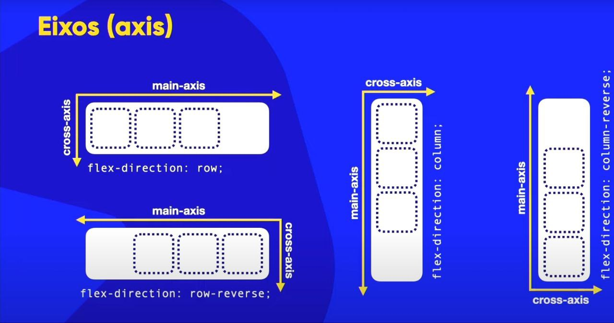
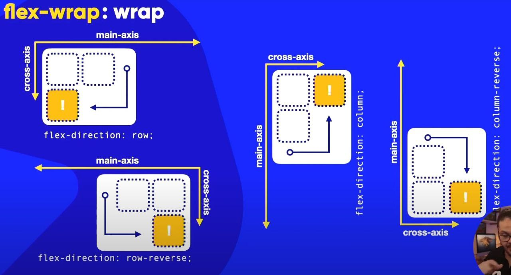
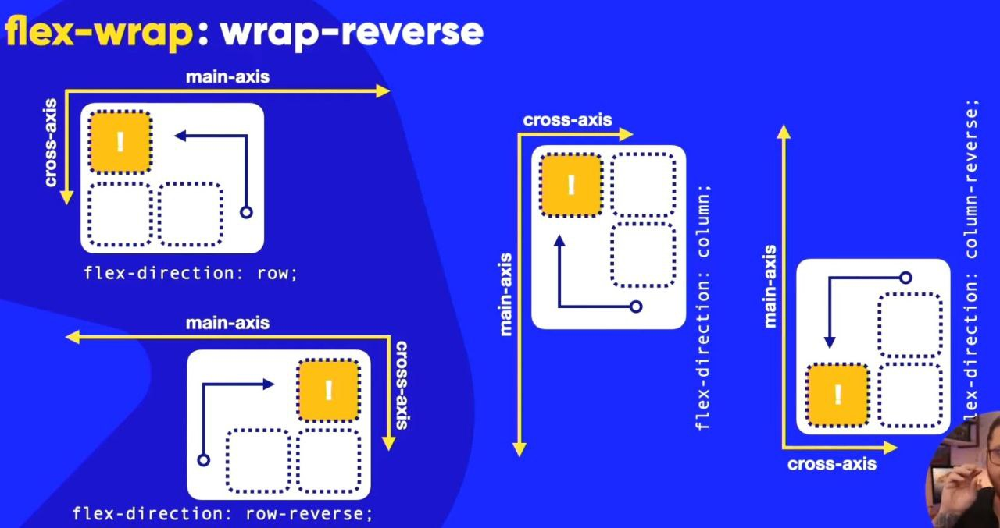
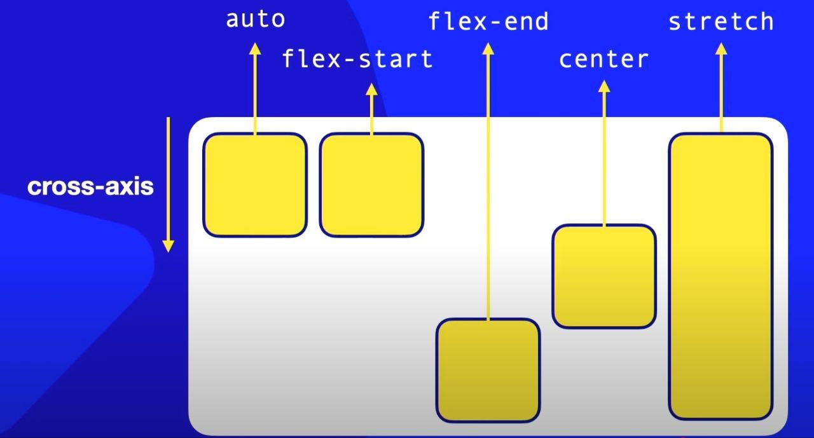

flexbox = igual container que tem os filhos e eles sao adaptaveis e de maneira uni-dimensional e pode expandir para uma direção, tendo eixos e direçoes como principal, secundaria e menus
flex container = pai, flex itens = filhos
Flex Direction apenas no pai, podendo 4 configurações, configuraçao padrao = row (linha, esquerda para direita), ja a configuraçao row-reverse (direita para esquerda), configuraçao vertical = column (de cima para baixo), configuraçao column-reverse (de baixo para cima).
Agora os eixos (axis), main-axis divido em main-star e main-end e o eixo transversal que é o cross-start e cross-end na configuraçao row
o encolhimento dos blocos, dos itens dentro da flexbox vai depender muito do conteudo dentro dele, com flex-wrap nowrap ordena que nao quebra, e é o padrao, já o wrap ele vai quebrar o bloco no eixo transversal e o wrap-referse vai quebrar no eixo transversal ao contrario
Exemplo 1:
 Exemplo 2:
Exemplo 3:
Flex-direction + flex-wrap = flex-flow: row nowrap
Exemplo 1:
Exemplo 2:
Para alinhar é o Justify-content, flex-start = pimeiro item vai ficar grudado exatamento no main-start e o espaço em branco vai ficar no final sempre, ja o flex-end é o contrario. O center vai deixar no centro do container, vai colocar todos os itens alinhados no centro do container e os espaços em branco serao destribuidos igualmente entre as o main star e end, e o space-between vai ter o primeiro e ultimo elemento vao estar grudados nos extremos e os do meio vao estar destribuidos no meio, já o space-evenly vai ter espaço antes e depois de cada elemento para cada elemento. o space-around vai dividir os espaços de forma igual e centralizar os itens dentro desses espaços
Exemplo de Alinhamentos:
Para eixo transversal é para usar align-items, que tem por padrao Stretch no qual vai esticar o elemento, e existe a opçao do flex-start que sempre vai fazer se grudar no inicio do Eixo, e o flex-end o contrario, ja o center vai colocar no meio deixando espaço entre inicio e fim,
Exemplo de Alinhamentos:
indepente do formato do container o elemento vai permanecer do mesmo jeito e no meio
Exemplo:
o align-content alinha o conteudo quando estao na transversal, e por padrao ele fica no stretch e dividir os elementos e pegar a dimensão e esticar, ja o flex-start vai pegar os elementos no start e reservar o espaço em branco para o end, ja o flex-end vai ser o contrario. E a opçao center que vai pegar os 3 elementos e alinhas os itens ao centro com mesmo valor de star e end, ja o space-between vai colocar os itens nos start e end e o espaço do meio em branco, e o space-evenly coloca espaço no star, center e end com o mesmo tamanho, e por fim o space-around que faz dividir os itens nas areas demarcadas e centralizar os elementos, nao vai esticar.
Exemplo:
todo item em tem order 0 por padrao, para modificar a ordem da exibiçao poderá colocar valores em cada item, o proprio CSS vai ordernar para que os itens sigam uma ordem crescente automaticamente
Exemplo:
ja no align-self faz com que cada item tenha um alinhamento especifico, vai se aplicar somente aos itens e ao eixo transversal, o auto vai se alinhar ao seu pai, flex-star vai se alinhar perto do inicio, o end o contrario, ja o center no centro e stretch vai se esticar
Exemplo imagem:
Exemplo Prático
Grid Layot = consegue criar layon em grades e definidir dimensoes e tamanhos e colocar na tela como se fosse adaptavel de qualquer forma é so saber usar as propriedades de CSS